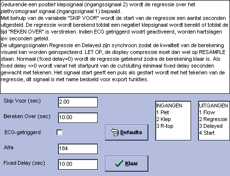

Perifere Flow m.b.v. Plethysmografie (f4)
Deze funktie is vervangen door Funktie 84 !
Deze funktie berekent de perifere bloedflow op basis van een plethysmograaf signaal. Het plethysmograaf signaal wordt verkregen uit meting aan een extremiteit, welke met een cuff (al dan niet ECG getriggerd, zie ook rekenfunktie 61 voorheen rekenfunktie 1) net onder de systolische bloeddruk wordt afgesloten. De toename van de omvang van de extremiteit, gemeten met een plethysmograaf, is een maat voor de toename van het bloedvolume in de extremiteit. De afgeleide van dit plethysmograaf signaal is een maat voor de bloedflow. De afgeleide wordt bepaald m.b.v. een lineaire regressie op basis van de kleinste kwadraten fout.
|
Inputs |
Parameters |
Outputs |
|
Pethysmograaf Cuff-inflatorR-top ECG |
Wait-period Measure-period IJkfactor QRS-triggered Fixed Delay |
Flow Regressielijn Delayed Plethysmograaf New Flow Available |
De start van de meting en daarmee de aansturing van de cuffs gebeurt door rekenfunktie 61 en kan zowel QRS getriggerd als seconde-getriggerd plaatsvinden.Deze routine gebruikt het signaal afkomstig van de rapid cuff-inflator voor het starten van een cyclus. Eenmaal gestart, wordt de resterende analyse (afhankelijk van de parameter QRS-TRIGGERED) 'QRS- getriggerd' danwel 'seconde-getriggerd' uitgevoerd. Bij QRS-getriggerd worden hartslagen geteld, in het andere geval worden seconden geteld.Nadat de cuffs zijn opgeblazen, wordt eerst een periode WAIT gewacht, daarna wordt gedurende de periode MEASURE de lineaire regressie bepaald. Met behulp van de parameter IJKFACTOR kan het resultaat de juiste resolutie en wereldwaarde worden gegeven (de schaling t.g.v. de samplefrekwentie wordt automatisch in het resultaat verwerkt). Het vertraagde plethysmograaf signaal en de identiek vertraagde regressielijn kunnen via de parameter FIXED-DELAYED van een vaste (minimale) vertraging worden voorzien. Op deze wijze kunnen diverse regressie berekeningen direkt visueel met elkaar worden vergeleken.
Bijzonderheden, Instelling van alfa
In kamer 134 heeft ijking van de plethysmograven de onderstaande waarden opgeleverd:
Let op de interpretatie van de Hokason: als de schakelaar op 5% staat betekent dit dat de volle schaalwaarde 5% bedraagt, de getallen -5 en +5 op de schaalverdeling hebben hier dus niets mee te maken. (men zou namelijk geneigd kunnen zijn om te veronderstellen dat de schaal van -5% naar 5% loopt, nee dus.)
|
|
0% |
5% |
Delta = 5% |
Delta [AD] |
|
Links |
-1.96 V |
2.03 V |
2.03 + 1.96 = 3.99 V |
(3.99/10)*4095=1634 |
|
Rechts |
-1.99 V |
1.98 V |
1.98 + 1.99 = 3.97 V |
(3.97/10)*4095=1626 |
DUS: 1% Plethysmograaf signaal komt overeen met 1630/5=326 AD-eenheden
De uitgangswaarde van deze rekenfunktie bedraagt:
|
|
X = alfa * delta-AD .[AD/ sec] |
Bij alfa=100 moet de volgende formule gebruikt worden om de helling in %/min te verkrijgen:
|
|
60 * (X / alfa) / 326 = X / 543 [%/min] |
Op zich is het prettiger om door een 'mooi getal' te delen.Om de uitgangswaarde door 1000 te kunnen delen om de echte uitkomst te verkrijgen, geldt voor alfa:
|
|
alfa = (60 * 1000) / 326 = 184 [] |
Instellingen Venster
